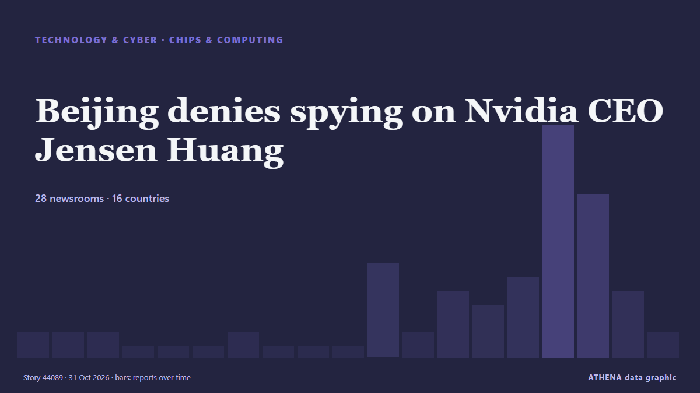

Beijing denies spying on Nvidia CEO Jensen Huang

Nvidia CEO Jensen Huang warned that Europe risks falling further behind the US and China in artificial intelligence, despite its industrial base and technical talent. из DigiTimes Asia
Независимые источники: 28 изданий в 16 странах, с 22 окт.; первым сообщил DigiTimes Asia; освещение идёт на спад. ATHENA оценивает риск как низкий (1.9/10), прежде всего из-за тяжести описываемого ущерба и географического и отраслевого охвата. Уверенность — 87 % (высокая); подтверждают независимые источники: 28 изданий, средняя надёжность источников — 75 %. Кто сообщал: 12 СМИ в стране Тайвань · Taiwan, 8 СМИ в стране Соединенные Штаты · United States, 6 СМИ в стране Индия · India. Освещение шло с 22 окт. по 30 окт., 193 ч.
Почему это важно: События в технологиях и кибербезопасности формируют безопасность, конкуренцию и правила цифровой жизни.
Что изменилось: 10 новых сообщений от 8 редакций за 24 часа до 31 окт..
Первый заголовок: On the ground at Nvidia's AI showpiece: Jensen-mania, robot ducks and neocloud distress
Заголовки приводятся на английском языке, как они были опубликованы.
Коротко в цифрах
Отобрано, оценено и написано по опубликованной методологии ATHENA. Ни один редактор не вмешивается в отдельные события. Как это создаётся ›
| 22 Oct 02:15 UTC | 1 |
|---|---|
| 22 Oct 14:15 UTC | 1 |
| 23 Oct 02:15 UTC | 1 |
| 23 Oct 14:15 UTC | 0 |
| 24 Oct 02:15 UTC | 0 |
| 24 Oct 14:15 UTC | 0 |
| 25 Oct 02:15 UTC | 1 |
| 25 Oct 14:15 UTC | 0 |
| 26 Oct 02:15 UTC | 0 |
| 26 Oct 14:15 UTC | 0 |
| 27 Oct 02:15 UTC | 6 |
| 27 Oct 14:15 UTC | 1 |
| 28 Oct 02:15 UTC | 4 |
| 28 Oct 14:15 UTC | 3 |
| 29 Oct 02:15 UTC | 5 |
| 29 Oct 14:15 UTC | 16 |
| 30 Oct 02:15 UTC | 11 |
| 30 Oct 14:15 UTC | 4 |
| 31 Oct 02:15 UTC | 1 |
Откуда эти цифры
Значимость
Риск
Уверенность
Освещение — кто сообщил и когда
заголовок в оригинале · открывает источник- DigiTimes Asia · Тайвань · TaiwanCharts: Nvidia's China AI chip lead shrinks 80% as Huawei closes in
- DigiTimes Asia · Тайвань · TaiwanJensen Huang warns Europe risks falling further behind US, China in AI
- CNBC World · Соединенные Штаты · United StatesOn the ground at Nvidia's AI showpiece: Jensen-mania, robot ducks and neocloud distress
- Times of India · Индия · IndiaNvidia’s Jensen Huang says US rules pushed China toward self-reliance
- DigiTimes Asia · Тайвань · TaiwanSamsung, SK Hynix eye 2Q27 shipments of 8-layer HBM4 to Nvidia
- DigiTimes Asia · Тайвань · TaiwanNvidia says GPUs last 8 years, unlocking AI financing
- DigiTimes Asia · Тайвань · TaiwanAMD, Nvidia target substrate capacity amid 4x expansion constraints
- CNA (Channel NewsAsia) · Сингапур · SingaporeChina's Unitree Robotics shares surge over 60% in less than two weeks despite industry risks warning
- DigiTimes Asia · Тайвань · TaiwanJensen and Musk both think aging GPUs are worth more than the books show
- TechCrunch · Соединенные Штаты · United StatesGeneral Compute raises $100 million Series A, countering the neocloud disaster narrative
- DigiTimes Asia · Тайвань · TaiwanNvidia DSX POD targets AI factories as Microsoft and AWS push modular data centers to the edge
- Korea Herald · Республика Корея · South KoreaNvidia's Madison Huang returns to Seoul amid physical AI push
- Times of India · Индия · IndiaBlackBerry was once the phone everyone wanted, now it is betting on AI robots
- Xinhua (English) — page reader · Китай · ChinaColumn: Understanding the strengths of China's governance model
- Xinhua (English) — page reader · Китай · ChinaColumn: Understanding the strengths of China's governance model
- The Next Web · Нидерланды · NetherlandsChina’s CXMT will make AI memory despite yields as low as 20%, Reuters says
- Colombia One · Колумбия · ColombiaChina’s 110 Dancing Humanoid Robots Set Guinness Record
- DigiTimes Asia · Тайвань · TaiwanAnthropic's IPO filing highlights China AI rivalry as model distillation, chip export controls emerge as key risks
- Times of India · Индия · IndiaNvidia CEO names 3 countries that are leading the world in tech & manufacturing
- DigiTimes Asia · Тайвань · TaiwanNvidia's Rubin Ultra cooling: 0.1mm microchannels vs vapor chambers
- DigiTimes Asia · Тайвань · TaiwanSenseCore captures nearly half of China's neocloud market as heterogeneous chips boost compute efficiency
- Korea Herald · Республика Корея · South KoreaSamsung SDS targets Asia-first Nvidia Vera Rubin cloud launch
- Tom's Hardware · Соединенные Штаты · United StatesNvidia CEO Jensen Huang may have been the target of a spy plot through 'Chinese intelligence asset,' report claims
- The Guardian · Великобритания · United KingdomNvidia CEO reportedly targeted by an alleged Chinese spy
- NDTV · Индия · IndiaNvidia CEO Calls Dealings With Company Under China Spying Probe "Normal"
- Indian Express · Индия · IndiaNvidia CEO Jensen Huang was spied on by Chinese intelligence agencies: Report
- CNBC World · Соединенные Штаты · United StatesNvidia responds to report Jensen Huang was target of Chinese asset, says diversion allegations were 'investigated and debunked'
- Colombia One · Колумбия · ColombiaNVIDIA’s Jensen Huang Reportedly Targeted in Chinese Spy Plot
- TechCrunch · Соединенные Штаты · United StatesUS investigated Chinese spy plot aimed at Nvidia CEO
- The Diplomat · Япония · JapanThe Promise and Pitfalls of Nvidia’s Venture in Kazakhstan
- Ars Technica · Соединенные Штаты · United StatesTrump ignored intel on China’s Nvidia spy to protect company’s stock, report says
- The Hill · Соединенные Штаты · United StatesNvidia dismisses report alleging Chinese executive tied to CEO passed intel to Beijing
- Sydney Morning Herald · Австралия · AustraliaThe ‘Chinese spy’ who sparked panic at the White House
- NBC News (World) · Соединенные Штаты · United StatesNew report says Nvidia CEO was possible target of Chinese spy plot
- The Straits Times · Сингапур · SingaporeNvidia chief Jensen Huang seen as target of Chinese spy plot
- The Straits Times · Сингапур · SingaporeNvidia CEO Jensen Huang says ties to company under spying probe were ‘normal’
- DigiTimes Asia · Тайвань · TaiwanAnalysis: Can Kazakhstan really be Europe's AI factory?
- Times of India · Индия · IndiaUS officials suspect Nvidia CEO may have known about China spy's activities: Report
- DigiTimes Asia · Тайвань · TaiwanAnthropic's multi-platform AI strategy pressures Nvidia pricing power
- CNA (Channel NewsAsia) · Сингапур · SingaporeNvidia's Huang says dealings with firm in US spy probe were 'normal': Report